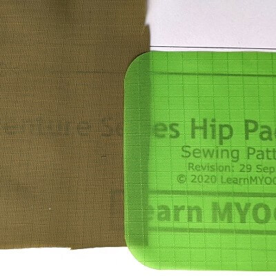

Backpacks and Hip Packs
Fabric selection for the main body of backpacks and bikepacking bags often trades weight against abrasion resistance and overall durability.
Non-breathable coated fabrics and laminates provide water resistance against inclement weather, but most are not 100% waterproof.
Fabrics woven with higher denier threads feel more sturdy and help provide a more rigid structure.
Jump to rating legend.
Fabric images were shot top-down from the same height for a consistent scale.
HyperD 300

For bright and shiny colors, HyperD 300 is a great option for backpacks. A 300D polyester, it has excellent abrasion resistance and durability.
PU coated on the underside with a DWR on the face, HyperD 300 has excellent water repellence.
HyperD 300 sews great, resists fraying, and is very affordable. So many colors and shiny diamonds!
210D Robic Ripstop

Robic ripstop nylon is fan favorite material for backpacks. The 210D variant provides excellent abrasion resistance and durability for the low weight.
PU coated on the underside with a DWR on the face, Robic has excellent water repellence.
Robic sews great, resists fraying, can be matched to 100D or 420D variants, and is easy on the wallet.
VX21 Terrain X-Pac

For many, X-Pac is the optimal fabric for technical bags. VX21 is a three-layer laminate with a 210D nylon face and 50D poly backer.
With its large visible x grid, VX21 is bomber and structurally rigid. It's not very forgiving to sew with and is relatively expensive.
The laminate has excellent water repellence and several bright color options.
Stuff Sacks and Linings
For lightweight bags, stuff sacks, pack liners, pockets, etc durability generally isn't a concern. Weight and water proofness may be.
Coated and impregnated fabrics are highly water resistent, but are not 100% waterproof.
Ripstop grids increase the tear resistance of these lightweight fabrics. Non-coated variants are breathable and may be calendered to be downproof and windproof.
1.1oz Silnylon

The original fabric for ultralight packs, silnylon is double coated (aka impregnated) with a silicon for high strength to weight.
While non-breathable, silnylon is highly waterproof and windproof. 1.1 oz (30 denier) silnylon is an excellent fabric for ultralight projects.
Numerous colors can be found and its very affordable.
1.9oz Coated Ripstop

Likely the most common of ripstop nylon fabrics, this 70 denier nylon with reinforcement grid is lightweight, widely available, and low cost.
PU coated on the underside with a DWR on the face, PU coated ripstop is water repellant and non-breathable.
The 1.9 oz (70 denier) is thicker than 1.1 oz (30 denier) so its easier to sew but it frays easily.
Oxford Nylon

A little heavier than 1.9 oz ripstop, 200 denier Oxford nylon is a great option for lightweight bags and linings.
Available in many color options, PU coated Oxford is highly water resistant and windproof.
Made with 200 denier nylon, Oxford is lightweight and easy to sew. There are no ripstop threads or grid pattern but the higher denier makes it quite durable.
Pack Mesh
Stretch pockets and padded backpanels have become common elements of modern backpacks. Stretch wovens typically stretch in either one direction (2-way) or lenght and width (4-way) .
These materials also have varying levels of stretch and durability. Ordering samples is a smart idea as sources and descriptions vary significantly. These stretch wovens are generally a blend of nylon and spandex.
Lycra Mesh

A great material for shoulder strap pockets, Lycra mesh is a very lightweight, tightly woven 4-way stretch. It quite durable for its weight however is not a good choice for high abrasion areas.
Lycra mesh has high amount of stretch with good recovery, estimated to about 80%. For additional durability and tighter pockets, double layering this mesh works well.
Duraweave

Spandura, heavy lycra, Duraweave, and some jersey spandex are all variants on similar theme.
Great for large stretch pockets such as front or bottom of pack or side water bottles, these stretch wovens are durable, maintain stretch well, and many are quite abrasion resistant.
2-way and 4-way will stretch to about 50% depending on blend and lycra content.
3D Spacer Mesh

For padded back panels and shoulders straps, 3D Spacer Mesh is one of the few available materials to MYOGers. Typically found in 3mm (1/8") or 6mm (1/4").
Breathable and padded, it can be used either side facing skin but neither is very comfortable. It sews well as its easy to compress and has very minimal stretch. I prefer 3mm and often line with a PU coated ripstop panel.
The rating scale is subjective and based on personal experiences
- 💪 Strength considers durability, abrasion resistance, and rigidity.
- #️⃣ Fabric weight measured in ounce per square yard, rounded based on specs.
- 💲 Cost per linear yard, not considering fabric width.
- 🧵 Sewability and resistence to fraying.


{kind=link}